About Me
Hello !! I'm Flynn Tan, and I'm an artist, working to be a fullstack developer, and an optimist with a bottomless void of curiosity and learning! Born and raised in Florida, I began my creative interests primarily in art, design, and English there, later moving to New York for college and pursuing a major in English and a minor in Web Applications.
Right now, I'm located in Austin, TX, working as a freelance web designer, art teacher, and zine contributor, as well as honing my miscellaneous skills in sewing and patterning, arts and craft, fiction writing, and tarot reading!
Connect With Me